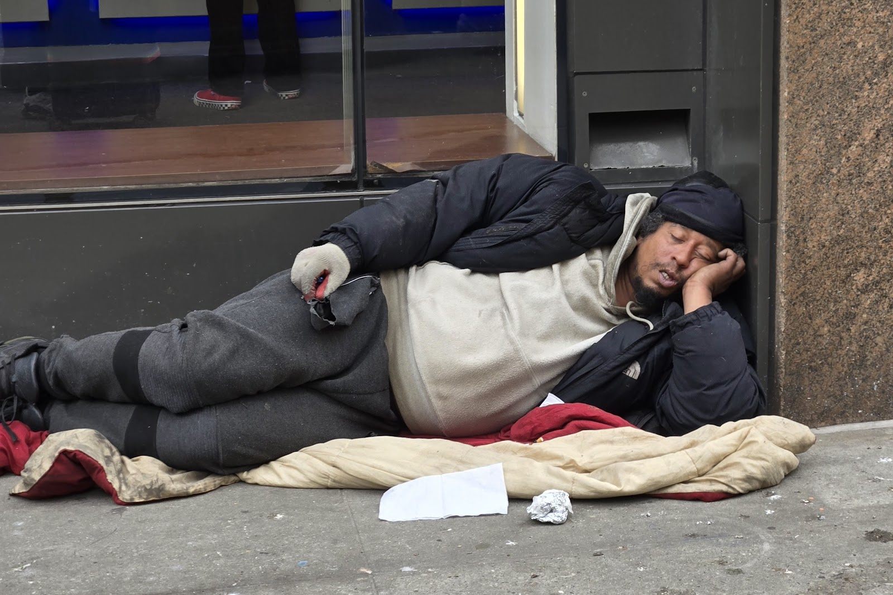
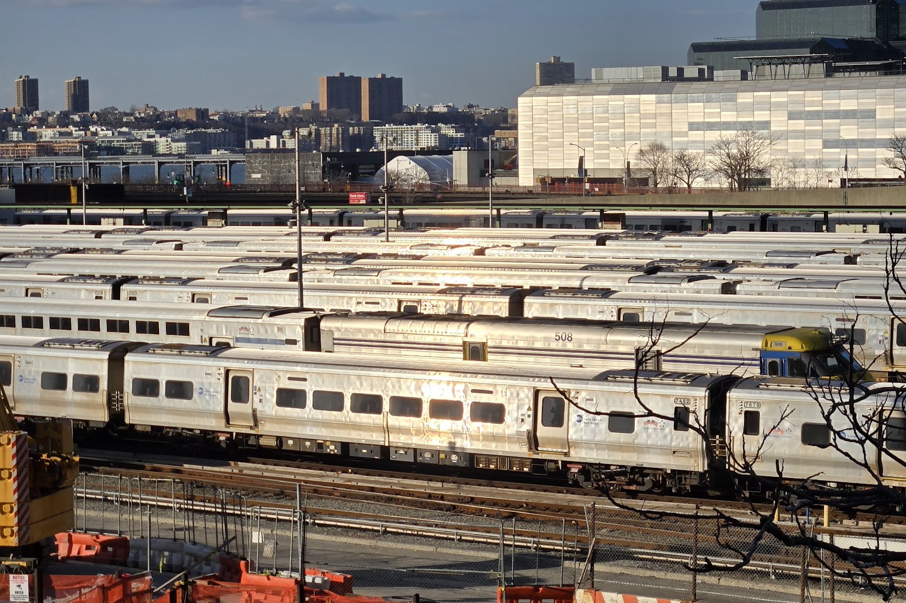
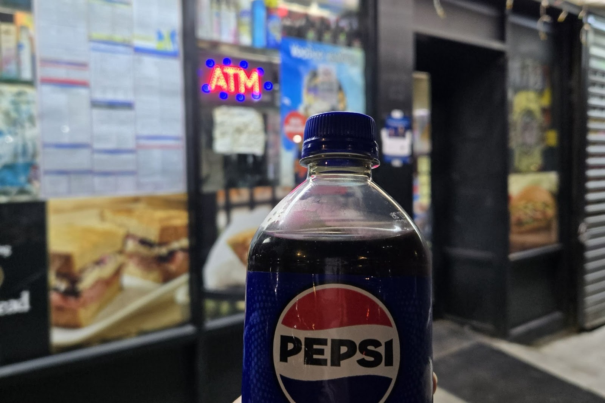
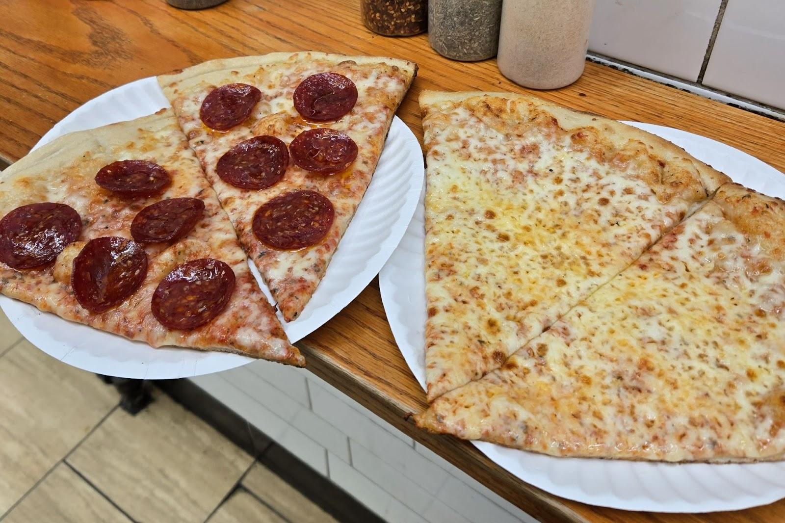
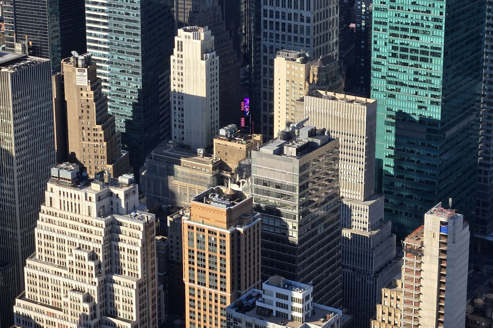
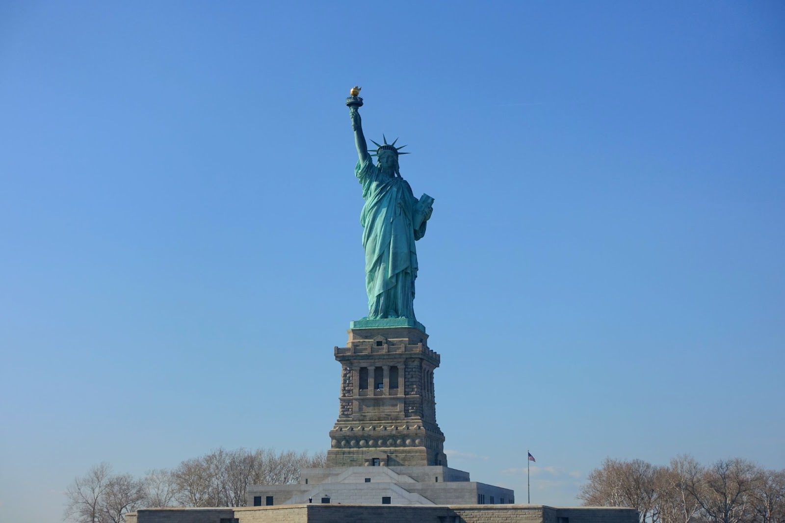
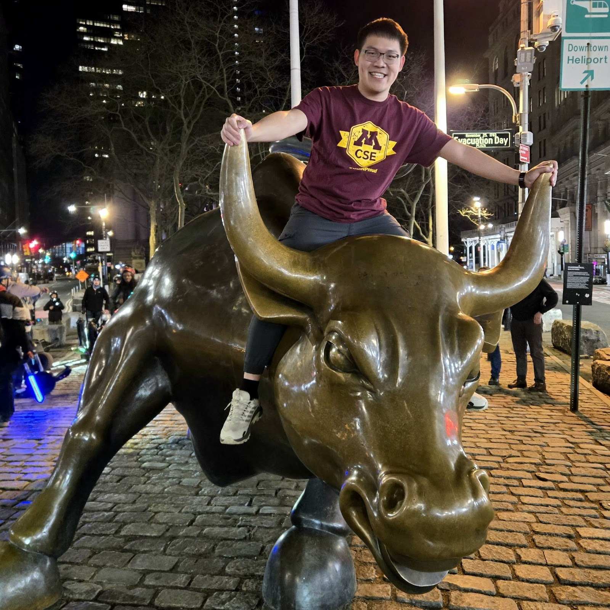

身為一個在明尼蘇達大學（UMN）交換的學生，好不容易熬過漫長的冬天迎來春假，我決定做一件挑戰自己的事：一個人去紐約旅行。
這是我人生中第二次出國，回想起上一次出國，還是小學時跟團去日本。沒想到第二次踏出國門，我就直接挑戰了紐約，而且還是獨自一人。老實說，出發前我看著紐約的物價真的有點緊張，畢竟身為預算有限的交換生，每一分錢都要花在刀口上。
雖然這是我第一次在國外獨旅，也稱不上是什麼旅遊達人，但在這趟旅程中，我慢慢摸索出了一些在曼哈頓「生存」的小方法。這篇文沒有什麼奢華的行程，只是想把這幾天我實際走過、覺得很實惠的路徑和生活細節記錄下來，希望能幫到跟我一樣想看世界、又想顧好錢包的朋友。
如果你也正計畫一場說走就走的冒險，卻跟我一樣擔心預算，希望這份新手的實戰筆記能給你一點參考！
下飛機的第一場冒險：從 Newark 機場進城
這次飛到紐約，我降落在紐華克機場（EWR）。下飛機的第一秒，震撼我的不是什麼壯觀的建築，而是從機場進市區的交通費。
本來想說為了方便，是不是直接叫 Uber 或搭直達火車就好？結果一查，Uber 隨便都要 30 鎂起跳，直達火車也要超過 10 鎂。這對第一次獨旅、預算有限的我來說，真的會心跳漏一拍。後來我決定試試看轉乘的方法，雖然要多花一點點心力，但全程竟然只要 4.85 鎂！
這是我走過覺得最實惠的路徑：
- 走出航廈搭公車： 尋找 NJ Transit Bus 62 號。雖然車上可以感應信用卡支付（1.85 鎂），但我的經驗是卡機有時候會當機，所以強烈建議口袋裡要準備一點零錢現金備用，免得刷不過變得很尷尬。
- 抵達樞紐站： 搭到 Newark Penn Station 下車。
- 轉乘 PATH 列車進入曼哈頓： 從那邊轉搭 PATH，車資是 3 鎂。這段可以直接刷感應式信用卡進站，非常方便，而且它的終點站就是世貿中心（World Trade Center），一出站就是曼哈頓最核心的地段。
雖然比直達火車多轉了一次車，但看著省下來的那幾十塊美金，心情真的踏實很多。如果你行李不算太厚重，這條在地人的路線真的很值得嘗試。

地鐵初體驗：打破傳聞的環境與超方便的 OMNY
進到市區後，地鐵就是最主要的交通工具。出發前聽過無數關於紐約地鐵「髒亂、危險」的傳聞，讓我這獨旅新手壓力超大。但實際搭乘後，我發現其實沒有想像中那麼糟糕，雖然看得出歷史感，但整潔程度還在可以接受的範圍，至少不像傳說中那麼誇張。
而這趟旅程中最讓我省心的，就是現在全面普及的 OMNY 系統。
原本我還在煩惱要去哪裡買實體卡、猶豫要不要買 33 鎂的週票（Unlimited Pass）。但買週票最糾結的就是，萬一最後幾天行程變少，沒刷到 12 次以上反而會覺得虧錢，有一種「一定要搭夠本」的壓力。
後來發現用 OMNY 系統真的拯救了我的強迫症：
- 不用預扣大筆金額： 不需要先掏出 33 鎂買週票，它是「刷多少扣多少」。
- 自動觸發優惠： 它的機制很聰明，只要你在週一到週日間刷滿 12 次（總額達 34 鎂），接下來的行程系統就會自動幫你轉為「免費」。
這種隨刷隨走、不用怕沒搭夠本會虧錢的便利性，讓我這個第一次獨旅的人覺得很安心。

預算族的守護者：Deli Store 與 Dollar Pizza
解決了交通，接下來就是填飽肚子。在紐約隨便進一家餐廳，加個小費和稅，20-30 鎂就沒了。這對預算有限的我來說，真的沒辦法天天這樣吃。
這時候，隨處可見的 Deli Store 和 Dollar Pizza 簡直就是我的救星：
- Deli Store 的生活感： 這些小店有點像台灣的雜貨店結合熟食攤，重點是它們通常都開到很晚。我最常在那裡買水和簡單的熱食。在一般的超市（像 Whole Foods 或 Target），一瓶可樂可能要 3 鎂多，但在 Deli Store 常能找到更實惠的價格，稅後大約 2 鎂就能買到，真的是獨旅者補充物資的靈魂伴侶。

- 傳說中的披薩： 雖然以前聽說過「1 鎂披薩」，但現在因為物價上漲，很多店都調整價格了。我這次吃到的一片大約是 1.5 鎂，雖然漲了價，但在紐約這依然是「神級」的實惠。雖然只是簡單的起司和番茄醬，但剛出爐的脆度，對於剛走完一整天路、飢腸轆轆的我來說，已經是五星級的享受了。

在紐約這幾天，我發現並不一定要進高級餐廳才能感受到這座城市的生命力。在路邊啃著披薩，喝著可樂，看著穿梭的人群，反而更能體會到最真實、最接地氣的曼哈頓生活。
不用排隊的紐約，與那些一定要打卡的經典
除了交通和吃飯，來到紐約當然還是要把那些經典的地標看過一遍。身為第一次來紐約的新手，我選擇了 City Pass，這對像我這樣想一次看完重點景點的人來說非常划算，不用一個一個分開買票，省了不少麻煩。
我這幾天的必去清單包括：
- 帝國大廈 (Empire State Building)： 站在觀景台上俯瞰整個曼哈頓，那種電影裡的場景真實呈現在眼前的震撼感，真的會讓人暫時忘記這趟旅程的疲累。

- 自由女神 (Statue of Liberty)： 搭著船近距離看到這座象徵性的神像，也是一定要完成的清單。

除了這些熱門景點，這趟旅程中我最難忘的反而是在半夜去華爾街 (Wall Street) 和 華爾街銅牛 (Charging Bull) 拍照。原本白天的華爾街總是擠滿了觀光客，想要跟銅牛合照一張可能要排隊排很久。但我選擇在深夜的時候過去，沒想到那時候的曼哈頓下城反而有種安靜的層次感。那時候完全沒有人跟我搶，我可以一個人在那裡慢慢拍照、慢慢走。

給還在猶豫的你：如果連我都能搞定，你一定也可以
回想這幾天在紐約的日子，雖然這是我第二次出國、第一次獨自旅行，出發前確實有很多焦慮，擔心物價太高、擔心交通太亂、也擔心安全問題。但當我真的站在曼哈頓街頭，看著那些穿梭的人群，我發現只要真的跨出那一步，很多事情其實沒想像中那麼難解決。
這趟旅程教會我的不只是如何用 4.85 鎂進城，或是如何找最實惠的 1.5 鎂披薩，更多的是一種「原來我也做得到」的成就感。從原本對交通一竅不通，到後來能熟練地在深夜的華爾街散步，這種獨自搞定一切的感覺真的很踏實。
這份筆記記錄的是我這個新手的真實體會，雖然稱不上什麼專業攻略，但希望能給同樣想嘗試獨旅、卻因為預算或未知而還在猶豫的你，一點點出發的動力。紐約確實很混亂也很快節奏，但只要你親自走過一趟，那些經驗都會變成你自己的一部分。